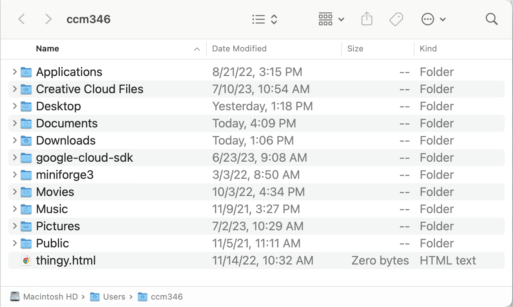

3 Moving around
3.1 Goal
Our goal for this lesson is to become familiar with a terminal and the Bash commands to move around and access different folders on your computer.
We’ll also create your class folder, which you will use for the rest of the semester.
3.2 Print working directory
One of the hardest things to get a handle on when first working in the terminal is to figure out where you are on your computer. It’s important, because you can run commands on any file on your computer from where you are, but you gotta know where that is before you can do so. So, we’ll use pwd, or “print working directory”.
- In your Terminal, type and execute:
pwdWhen I do this on my machine, here is what the command and response look like:
$ pwd
/Users/ccm346Because I’m using my work computer my user directory is called “ccm346”. Yours might be your name or part of your name. This user directory is called your “home directory”. All of your computer files are stored inside your home directory.
When you launch a new terminal it starts you out inside this directory.
3.3 List directory
Let’s see what is inside our home directory.
- Do this:
lsThis will list everything in the directory you are in. Mine looks like this:
$ ls
Applications Library google-cloud-sdk
Creative Cloud Files Movies miniforge3
Desktop Music thingy.html
Documents Pictures
Downloads PublicIt listed the names of all the folders and files of the directory I’m in. This is similar to opening a folder browser on your computer and then opening your home folder and looking inside of it.

3.4 Flags
But sometimes, I want to know more information about the files, like their modification date. To do this, we introduce something called flags, which add nuance or detail to a terminal command. They start with a dash, and you can pile them on, as I’ll demonstrate.
- First, try this:
ls -lThat is “dash L”, not a number 1. Watch the spaces, too.
My output looks like this:
crit:~$ ls -l
total 0
drwx------@ 5 ccm346 AUSTIN\Domain Users 160 Aug 21 2022 Applications
drwx------@ 4 ccm346 AUSTIN\Domain Users 128 Jul 10 10:54 Creative Cloud Files
drwx------@ 23 ccm346 AUSTIN\Domain Users 736 Jul 11 13:18 Desktop
drwx------+ 23 ccm346 AUSTIN\Domain Users 736 Jul 11 09:29 Documents
drwx------@ 8 ccm346 AUSTIN\Domain Users 256 Jul 12 13:06 Downloads
drwx------@ 101 ccm346 AUSTIN\Domain Users 3232 Jun 13 14:23 Library
drwx------+ 6 ccm346 AUSTIN\Domain Users 192 Oct 3 2022 Movies
drwx------+ 4 ccm346 AUSTIN\Domain Users 128 Nov 9 2021 Music
drwx------+ 5 ccm346 AUSTIN\Domain Users 160 Jul 2 10:29 Pictures
drwxr-xr-x+ 4 ccm346 AUSTIN\Domain Users 128 Nov 5 2021 Public
drwxr-xr-x 21 ccm346 AUSTIN\Domain Users 672 Jun 23 09:08 google-cloud-sdk
drwxr-xr-x 15 ccm346 AUSTIN\Domain Users 480 Mar 3 2022 miniforge3
-rw-r--r-- 1 ccm346 AUSTIN\Domain Users 0 Nov 14 2022 thingy.htmlWell, that’s a lot of info, and much of it jibberish. Here is what each part of those lines means …
drwxr-xr-xand similar is the permission information for a that file or folder. We aren’t going to get into it here, but you can read more if you like.- The next number is the number of files inside the folder, sort of. If this is a file, the number will be “1”. If it is a folder, the number will always be at least “2”. We’ll come back to this.
- Next is the owner of the file or folder.
- Next is a permission level for the user when the file was created.
- Next is the file size in bytes.
- Next is the last modified date of the file or when a file was added to the folder.
- File or folder name.
3.4.2 Dot directories
But let’s consider the first two returns:
$ ls -a
.
..These are two special designations in the Unix world. A single period . designates “this directory” and two periods .. designates the “parent directory”, i.e. the folder “above” this one. Every directory has these, so that’s why the ls -l always shows two items inside a directory, even if it is “empty” of regular files or folders.
We can use these “dot” and “dot dot” designations to move around into different directories, and to manage files in our current directories. They become super important when we make “paths” between files in our programs and web pages.
Let’s see this “dot” designation in action by opening our “current” folder in Finder. This command differs slightly depending on your OS.
- Do this command:
open .- Do this command:
start .Since you are inside your “home directory”, this should open that folder in your Finder.
A word about cloud services like iCloud and OneDrive. We are going set up a place to store our projects so they are NOT backed up to cloud services. We do this for a couple of reasons:
- Later projects in this class will include thousands of tiny files. The process of writing them back forth to the cloud service can affect computer performance.
- Our projects use these files in order to function, and when they get off-loaded to the cloud then our code has problems working.
Don’t worry … we’ll back up your class work through Github.
3.5 Make directory
Next we are going to make a new empty folder to store all our class files using the mkdir command.
- Do this:
mkdir icj- Then use
lsagain to see your new directory amongst the others.
Creating a directory like this is exactly the same as opening a desktop window on your Mac creating a new folder. Folders and directories are the same thing.
- Cool, let’s make another directory inside of
icj.
mkdir icj/newdirectory- Now you can do an
lson the “icj” folder to see what is inside it.
ls icjIt should show you newdirectory. Something like this:
$ ls icj
newdirectoryA couple of things about this:
You have listed the contents of the icj directory without being inside of it. You can list the contents of any folder on your computer if you know the path to it. In fact, you can do any command on any file or folder on your computer if you know its path. The path is the folder structure between where you “are” in the terminal to where the new file/folder is.
If you name a directory with a space in it, you’ll not get what you want unless you put quotes around it. Because of this, I avoid using spaces in files and folders and use - or _ instead. I avoid capitalization, too, because our folders become url names and sometimes caps mess it up, especially on PCs.
3.6 Change directory
It’s time to move into different folders within our terminal. The cd command lets us change directory.
- Now, let’s go inside the
icjfolder:
cd icj- Let’s see what is inside:
lsThat should show you a result with the newdirectory that we created earlier.
3.7 Parent directories
Now let’s get crazy. Let’s list the files “above” where we are.
- Type and run this command.
$ ls ../Remember I said that two dots means the parent directory? This should show you the list of files and folders in your home directory.
- Now, confirm where you are:
pwdWhich should still be icj. So you had listed the files for the folder “above” you.
3.8 Tab completion
If you are doing ls or cd or otherwise referencing a path in the terminal, you don’t have to type the whole word for each directory. If you are trying to list the contents of “newdirectory”, then start with ls newd and then hit tab, and it will finish out the path as ls newdirectory. This is SUPER handy and you should use it often. Like all the time.
Tab completion makes your programming life so much easier, and it works in more places than in our terminal. Use this skill.
3.9 On the right path
3.9.1 Relative paths
You can ls files or cd into any directory relative to your current working directory using ../ to move “up” the folder structure and then use the name of the new directory to move inside it. So a path like this: ls ../../Users/Cory is to travel up two folders, then into Users then into Cory and then list all the files there.
This is very powerful in programming, because you might be writing and testing code on your own computer, but then run the program on another computer, so if file01.py needs to talk to file02.py, you don’t want to hard-code a path like http://utdata.cmcdonald.com/scripts/file02.py, because you might not always be on utdata.cmcdonald.com. If it’s in the same folder, you could use file02.py or ./file02.py.
3.9.2 Root-relative paths
You can reference the “root” or the top level of whatever server or machine you are on even if you don’t know the name of it, by starting your path with a slash like this: /scripts/file01.py. That’s called a root-relative path. If you know the root-relative path to a file or folder, you can always find it no matter what directory you are currently in. We won’t use this much in this class.
3.9.3 Absolute paths
An absolute path includes the domain or computer name. If I reference http://utdata.cmcdonald.com/scripts/file01.py in my code or script, it will only work if I’m on utdata.cmcdonald.com. If I move that script to another computer or server, it will still try to pull from utdata.cmcdonald.com instead of the version on the new computer. We avoid using absolute paths in this class for this reason.
3.9.4 The home directory shortcut
There is also a path shortcut called ~/ that stands for “the home directory of the logged in person”. You might see that referenced in paths like ~/Documents/ but that would really take me to /Users/ccm346/Documents/ on my computer. But what’s cool is the same ~/Documents/ path works on YOUR computer, even though your user directory name is different.